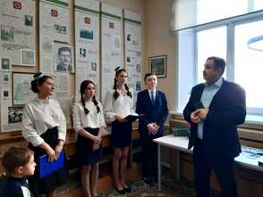
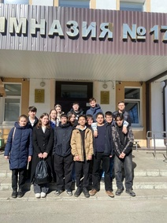
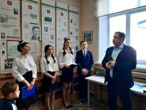
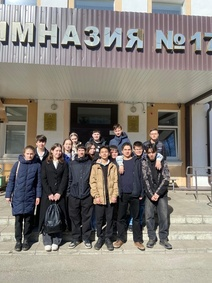

Татарская гимназия №17
им. Г. Ибрагимова
им. Г. Ибрагимова
Гимназия была открыта в 1991 году как преемница первой в Казани татарской школы. Она сохраняет традиции национального образования, сочетая их с современными методами обучения. Учреждение имеет Концепцию, Устав и Программу развития, определяющие её миссию и цели. Сегодня гимназия остается важным образовательным и культурным центром.

Музей имени Г. Ибрагимова открыт в 1997 году к 110-летию писателя. Это единственный в республике музей, посвящённый его жизни и творчеству. В экспозиции представлены уникальные документы, материалы и произведения, отражающие его вклад в культуру. Музей сохраняет наследие писателя для будущих поколений.
Татарская гимназия сочетает национальные традиции с современным образованием. Здесь углубленно изучают татарский язык, литературу и культуру. Особое внимание уделяется воспитанию уважения к истории и традициям через тематические мероприятия. Это место, где ученики получают качественное образование и связь с культурным наследием.
 



Воспитанники лагеря «Ялкын» сдавали пробные экзамены для проверки знаний перед реальными испытаниями. Завершена подготовка к защите проектов в апреле. Учитель истории Диана Ильгизовна выступила с докладом о героях Московского района и их подвигах.
В нашей гимназии вышла новая школьная газета! После весенних каникул вы сможете ознакомиться с ней. Газета расположена на первом этаже, недалеко от столовой.
Активисты гимназии "Движение первых" участвовали в конкурсе "Будь здоров!" на базе спорткомплекса "Олимпиец". Мероприятие пропагандирует ЗОЖ и объединяет активную молодёжь под девизом "Здоровый образ жизни – наш выбор!".
11 апреля специалисты ИКМО Казани и ПДН провели для учащихся 6–9 классов беседу о правах и ответственности несовершеннолетних за правонарушения
В рамках проекта «Киноуроки в школах России» ученики 5Б и 9Б классов посмотрели фильм «Мост», познакомились с культурой якутского народа и обсудили стойкость героев картины.
Наша сборная по волейболу заняла 2 место в группе! Хотя в финал не прошли, гордимся результатом и верим в будущие победы!
Поздравляем учеников и педагогов с достойными результатами Городской конференции/ Физкультура :Тазеева Айсылу – победитель (рук. Мифтахова, Агзамова) Иностранный: Загидуллина Айсылу – призёр (рук. Сабирова, Агзамова) Татарская : Каримова Алия , Усманов Риназ – призёры (рук. Агзамова) Литература : Тазиев Султан, Ахметзянов Фаиль, Шагимарданова Аделя – призёры (рук. Курбангалина, Агзамова) Желаем новых научных достижений и побед!